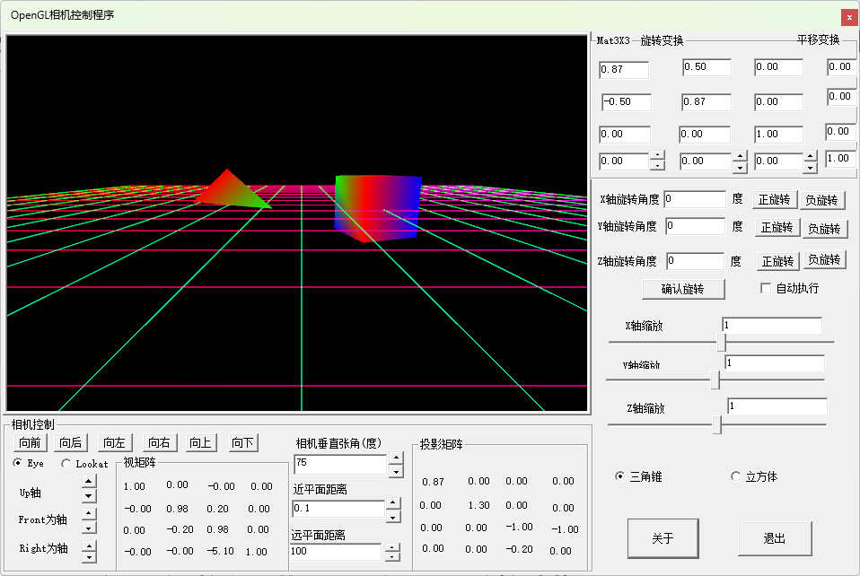

从本次例程开始，我们真正进入三维程序的设计学习，在以前程序用到的Shader中有这样依据语句：
1gl_Position = ProjectionMatrix * ViewMatrix * ModelMatrix *vec4(inPosition,1.0)
表示输入顶点坐标，需要经过模型变换、视变换(相机变换)、投影变换，然后传送到下一阶段的运算，其实在真正的OpenGL系统(传统的OpenGL管线)中，模型变换与视变换是合在一起计算的，通过glMatrixMode(GL_MODELVIEW);函数设定当前变换为模型与视变换矩阵的计算，但是为了工程应用方便，通常将GL_MODELVIEW矩阵分解为模型变换计算与视矩阵，然后将视矩阵与投影矩阵结合到一起，通过一个称为相机类的对象进行变换管理，怎样就很清晰的表述了OpenGL的坐标变换过程。
下面我们给出了我们开发的Camera类的源代码：
x1/* FileName:Camera.hpp 定义OpenGL开发过程中用到的相机类2本头文件包含了投影类型的定义GLProjectionType，GLProjection、相机类3为方便用户对相机类的控制，Camera类中保存的m_EyePos、m_EyeLookat、m_EyeUp三个变量（注意没有保存Front、Right、Up；这三个单位矢量需要计算得到）42020年1月 刘文庆 开发于河北廊坊 版权所有 */5#ifndef __CAMERA_HPP__7#define __CAMERA_HPP__8#include "glad.h"10#include <string>11#include "g_consts.h"12#include "glm/glm.hpp"13#include "glm/gtc/type_ptr.hpp"14#include "glm/gtc/matrix_transform.hpp"15#include "glm/gtc/quaternion.hpp"16#define GLM_ENABLE_EXPERIMENTAL17#include "glm/gtx/euler_angles.hpp"18#include "LineAndPlane.hpp"19enum GLProjectionType21{22Orthographic = 0,23Perspective = 124};25struct GLProjection26{27GLProjection() {}28/*GLProjectionType _type = Perspective*/30void SetPerspectiveProjection( float fovY, float aspectRatio, float _near=0.1f, float _far=1000.0f);31/*GLProjectionType _type = Orthographic*/32void SetOrthographicProjection( float _left, float _right, float _bottom, float _top, float _near=0.1f, float _far=1000.0f);33void TraditionalSetProjection(void);34glm::mat4 GetProjectionMat(void)35{36if (projectionType == Perspective)37return glm::frustum(Left, Right, Bottom, Top, Near, Far);38else39return glm::ortho(Left, Right, Bottom, Top, Near, Far);40}41GLProjectionType projectionType;42float getFovY();43void SetFovY(float AngleDegrees)44{45float aspectRatio = (Right - Left) / (Top- Bottom);46float tangent = tanf(0.5f * AngleDegrees * G_DEG_TO_RAD);47float height = Near * tangent; // half height of near plane48float width = height * aspectRatio; // half width of near plane49Left = -width;51Right = width;52Top = height;53Bottom = -height;54}55void SetNear(float _near)56{57float aspectRatio = (Right - Left) / (Top - Bottom);58float tempFov = atan(fabs(Bottom / Near));59Near = _near;60float tangent = tanf(tempFov); // tangent of half fovY62float height = _near * tangent; // half height of near plane64float width = height * aspectRatio; // half width of near plane65Left = -width;66Right = width;67Top = height;68Bottom = -height;69}70float Left;71float Right;72float Bottom;73float Top;74float Near=0.1f;75float Far=100.0f;76};77//------------------------------------------------------------------------------------------78inline void GLProjection::SetPerspectiveProjection( float fovY, float aspectRatio, float _near, float _far)79{80projectionType = Perspective;81Near = _near;82Far = _far;83float tangent = tanf(0.5f*fovY * G_DEG_TO_RAD); // tangent of half fovY85float height = _near * tangent; // half height of near plane87float width = height * aspectRatio; // half width of near plane88Left = -width;89Right = width;90Top = height;91Bottom = -height;92}93inline void GLProjection::SetOrthographicProjection( float _left, float _right, float _bottom, float _top, float _near, float _far)94{95projectionType = Orthographic;96Near = _near;97Far = _far;98Left = _left;100Right = _right;101Top = _top;102Bottom = _bottom;103}104inline float GLProjection::getFovY()105{106float tempF = atan(fabs(Bottom / Near));107return tempF * 2 * G_RAD_TO_DEG;108}109inline void GLProjection::TraditionalSetProjection(void)110{111glMatrixMode(GL_PROJECTION); // 选择投影矩阵112glLoadIdentity(); // 重置投影矩阵113if (projectionType == Perspective)114{115glFrustum(Left, Right, Bottom, Top,Near,Far);116}117else118{119glOrtho(Left, Right, Bottom, Top, Near, Far);120}121glMatrixMode(GL_MODELVIEW); // 选择模型观察矩阵122}123//---------------------------------------------------------------------------------------124class Camera125{126public:127glm::vec3 m_EyePos = glm::vec3(0.0f, 0.0f, 1.0f);128glm::vec3 m_EyeLookat = glm::vec3(0.0f, 0.0f,0.0f);129glm::vec3 m_EyeUp = glm::vec3(0.0f, 1.0f, 0.0f);130GLProjection m_Projection;132public:133Camera() {};134~Camera() {};135void SetCamera(glm::vec3 _Pos = glm::vec3(0.0f, 0.0f, 1.0f), glm::vec3 _Lookat = glm::vec3(0.0f, 0.0f, 0.0f), glm::vec3 _Up = glm::vec3(0.0f, 1.0f, 0.0f))136{137m_EyePos = _Pos;138m_EyeLookat = _Lookat;139m_EyeUp = _Up;140}142void SetPerspectiveProjection(float fovY, float aspectRatio, float _near, float _far);143void SetOrthographicProjection(float _left, float _right, float _bottom, float _top, float _near, float _far);144void TraditionalSetProjection(void)145{146m_Projection.TraditionalSetProjection();147}148glm::mat4 GetProjectionMat(void)149{150return m_Projection.GetProjectionMat();151}152glm::mat4 InitializeUseLookat(glm::vec3 _Pos = glm::vec3(0.0f, 0.0f, 1.0f), glm::vec3 _Lookat = glm::vec3(0.0f, 0.0f, 0.0f),154glm::vec3 _Up = glm::vec3(0.0f, 1.0f, 0.0f))155{156m_EyePos = _Pos;157m_EyeLookat = _Lookat;158m_EyeUp = _Up;159return glm::lookAt(_Pos, _Lookat, _Up);161}162const glm::mat4 GetViewMat()163{164return glm::lookAt(m_EyePos, m_EyeLookat, m_EyeUp);165}166const glm::vec3 GetFront()167{168return glm::normalize(m_EyeLookat- m_EyePos);169}170const glm::vec3 GetUp()171{172glm::vec3 _Front = GetFront();173glm::vec3 _Right = glm::normalize(glm::cross(_Front, m_EyeUp));174return glm::normalize(glm::cross(_Right, _Front));175}176glm::vec3 GetRight()177{178return glm::normalize(glm::cross(GetFront(), m_EyeUp));179}180const glm::vec3& GetEyePosition()181{182return m_EyePos;183}184const glm::vec3& GetPosition()185{186return m_EyePos;187}188void SetPosition(const glm::vec3& cNewPos)189{190glm::vec3 tVec3 = cNewPos - m_EyePos;191m_EyePos += tVec3;192m_EyeLookat += tVec3;193}194const glm::vec3 GetRotation()195{196glm::vec3 t_vec3;197glm::mat4 _RotMat = GetViewMat();198glm::extractEulerAngleYXZ(_RotMat, t_vec3.y, t_vec3.x, t_vec3.z);199return t_vec3;200}201//注意：如果202void SetRotation(const glm::vec3& cRot,BOOL ChangeEyeUp= FALSE )203{204glm::mat4 _RotMat = glm::mat4(1.0f);205glm::qua<float> q = glm::qua<float>(cRot); //glm::radians(glm::vec3(0.0f, 0.0f, 90.0f))); //创建一个绕z轴旋转90度的四元数206_RotMat = glm::mat4_cast(q) * _RotMat; //得到一个旋转的模型矩阵208glm::vec3 front;210front.x = -_RotMat[0][2];211front.y = -_RotMat[1][2];212front.z = -_RotMat[2][2];213float _Distance = sqrt((m_EyeLookat.x - m_EyePos.x) * (m_EyeLookat.x - m_EyePos.x) +215(m_EyeLookat.y - m_EyePos.y) * (m_EyeLookat.y - m_EyePos.y) +216(m_EyeLookat.z - m_EyePos.z) * (m_EyeLookat.z - m_EyePos.z));217front = glm::normalize(front);219m_EyeLookat = m_EyeLookat + front * _Distance;220//注意这样计算的Up矢量是与m_EyeLookat垂直的矢念，可能与原来的m_EyeUp向上的矢念有所不同221if (ChangeEyeUp == TRUE)223{224//glm::vec3 euler = glm::eulerAngles(q) * 3.14159f / 180.f;225m_EyeUp.x = _RotMat[0][1];226m_EyeUp.y = _RotMat[1][1];227m_EyeUp.z = _RotMat[2][1];228}229}231void MoveFront(float distance)232{233glm::vec3 _Front = GetFront();235m_EyePos += _Front * distance;236m_EyeLookat += _Front * distance;237}239void MoveUp(float distance)241{242glm::vec3 _Up = GetUp();243m_EyePos += _Up * distance;244m_EyeLookat += _Up * distance;245}247void MoveRight(float distance)248{249glm::vec3 _right = GetRight();250m_EyePos += _right * distance;251m_EyeLookat += _right * distance;252}253void Rotate(const float& _Angle,const glm::vec3& _Center, const glm::vec3& _AroundVector)254{255glm::mat4 trans = glm::mat4(1.0f);256trans *= glm::translate(trans, -_Center);257trans *= glm::rotate(trans, _Angle, _AroundVector );258trans *= glm::translate(trans, _Center);259m_EyePos = glm::vec4(m_EyePos,1.0f) * trans;260m_EyeLookat = glm::vec4(m_EyeLookat, 1.0f) * trans;261m_EyeUp = glm::vec4(m_EyeUp, 1.0f) * trans;262}263void RotateCenterLookatAroundVecter(const float& _Angle,const glm::vec3& _AroundVector)264{265Rotate(_Angle,m_EyeLookat, _AroundVector);266}267void RotateCenterEyePosAroundVecter(const float& _Angle, const glm::vec3& _AroundVector)268{269Rotate(_Angle, m_EyePos, _AroundVector);270}271void RotateCenterLookatAroundEyeUp(const float& _Angle)272{273Rotate(_Angle, m_EyeLookat, m_EyeUp);274}275void RotateCenterLookatAroundEyeFront(const float& _Angle)276{277Rotate(_Angle, m_EyeLookat, GetFront());278}279void RotateCenterLookatAroundEyeRight(const float& _Angle)280{281Rotate(_Angle, m_EyeLookat, GetRight() );282}283void RotateCenterEyePosAroundEyeUp(const float& _Angle)284{285Rotate(_Angle, m_EyePos, m_EyeUp);286}287void RotateCenterEyePosAroundEyeFront(const float& _Angle)288{289Rotate(_Angle, m_EyePos, GetFront());290}291void RotateCenterEyePosAroundEyeRight(const float& _Angle)292{293Rotate(_Angle, m_EyePos, GetRight());294}295float GetFovY()297{298return m_Projection.getFovY();299}300void SetFovY(float AngleDegrees)301{302m_Projection.SetFovY(AngleDegrees);303}304float GetNear()305{306return m_Projection.Near;307}308void SetNear(float _near)309{310m_Projection.SetNear(_near);311}312float GetFar()313{314return m_Projection.Far;315}316void SetFar(float _far)317{318m_Projection.Far = _far;319}320};321inline void Camera::SetPerspectiveProjection(float fovY, float aspectRatio, float _near, float _far)323{324m_Projection.SetPerspectiveProjection(fovY, aspectRatio, _near, _far);325}326inline void Camera::SetOrthographicProjection(float _left, float _right, float _bottom, float _top, float _near, float _far)327{328m_Projection.SetOrthographicProjection(_left, _right, _bottom, _top, _near, _far);329}330#endif
在Camera类中，我们主要设计了针对Camera对象进行操作的方法：
glm::mat4 InitializeUseLookat(glm::vec3 _Pos = glm::vec3(0.0f, 0.0f, 1.0f), glm::vec3 _Lookat = glm::vec3(0.0f, 0.0f, 0.0f), glm::vec3 _Up = glm::vec3(0.0f, 1.0f, 0.0f))
用于初始化相机对象，参数分别是相机位置；相机指向的观察位置；相机向上的单位矢量；注意： _Up矢量在Front与 _Up构成的平面类不一定相互垂直，真正的 _Up单位矢量需要根据一下规则计算得到：
glm::vec3 Front = GetFront(); glm::vec3 _Right = glm::normalize(glm::cross(Front, m_EyeUp)); glm::normalize(glm::cross(_Right, _Front));
控制相机位置和旋转的方法：
GetPosition()/SetPosition()
GetRotation()/SetRotation()
MoveFront()/MoveUp()/MoveRight()
Rotate(const float& Angle,const glm::vec3& _Center, const glm::vec3& _AroundVector) 以 _Center为中心点，绕AroundVector轴旋转 _Angle角，得到新的相机观察矩阵；
RotateCenterLookatAroundVecter(const float& _Angle,const glm::vec3& _AroundVector) 以Lookat为旋转中心，绕 _AroundVector轴旋转 _Angle，得到新的旋转矩阵；
RotateCenterEyePosAroundVecter(const float& _Angle, const glm::vec3& _AroundVector) 以EyePos为旋转中心，绕 _AroundVector轴旋转 _Angle;得到新的旋转矩阵；
通过Camera类的设计；我们在程序中可以很容易的控制相机进行场景漫游；
为了增加三维场景的立体感，我们首先构建一个有横线和纵线构成的地面，我们首先建立如下的地面模型：
xxxxxxxxxx11171static float vertexLines[] =2{3-10.0f,0.0f,10.0f, 10.0f,0.0f,10.0f,4-10.0f,0.0f,9.0f, 10.0f,0.0f, 9.0f,5-10.0f,0.0f,8.0f, 10.0f,0.0f, 8.0f,6-10.0f,0.0f,7.0f, 10.0f,0.0f, 7.0f,7-10.0f,0.0f,6.0f, 10.0f,0.0f, 6.0f,8-10.0f,0.0f,5.0f, 10.0f,0.0f, 5.0f,9-10.0f,0.0f,4.0f, 10.0f,0.0f, 4.0f,10-10.0f,0.0f,3.0f, 10.0f,0.0f, 3.0f,11-10.0f,0.0f,2.0f, 10.0f,0.0f, 2.0f,12-10.0f,0.0f,1.0f, 10.0f,0.0f, 1.0f,13-10.0f,0.0f,0.0f, 10.0f,0.0f, 0.0f,14-10.0f,0.0f,-1.0f, 10.0f,0.0f,-1.0f,15-10.0f,0.0f,-2.0f, 10.0f,0.0f,-2.0f,16-10.0f,0.0f,-3.0f, 10.0f,0.0f,-3.0f,17-10.0f,0.0f,-4.0f, 10.0f,0.0f,-4.0f,18-10.0f,0.0f,-5.0f, 10.0f,0.0f,-5.0f,19-10.0f,0.0f,-6.0f, 10.0f,0.0f,-6.0f,20-10.0f,0.0f,-7.0f, 10.0f,0.0f,-7.0f,21-10.0f,0.0f,-8.0f, 10.0f,0.0f,-8.0f,22-10.0f,0.0f,-9.0f, 10.0f,0.0f,-9.0f,23-10.0f,0.0f,-10.0f, 10.0f,0.0f,-10.0f,24-10.0f,0.0f,-10.0f, -10.0f,0.0f,10.0f,26-9.0f,0.0f,-10.0f, -9.0f,0.0f,10.0f,27-8.0f,0.0f,-10.0f, -8.0f,0.0f,10.0f,28-7.0f,0.0f,-10.0f, -7.0f,0.0f,10.0f,29-6.0f,0.0f,-10.0f, -6.0f,0.0f,10.0f,30-5.0f,0.0f,-10.0f, -5.0f,0.0f,10.0f,31-4.0f,0.0f,-10.0f, -4.0f,0.0f,10.0f,32-3.0f,0.0f,-10.0f, -3.0f,0.0f,10.0f,33-2.0f,0.0f,-10.0f, -2.0f,0.0f,10.0f,34-1.0f,0.0f,-10.0f, -1.0f,0.0f,10.0f,35-0.0f,0.0f,-10.0f, -0.0f,0.0f,10.0f,361.0f,0.0f,-10.0f, 1.0f,0.0f,10.0f,372.0f,0.0f,-10.0f, 2.0f,0.0f,10.0f,383.0f,0.0f,-10.0f, 3.0f,0.0f,10.0f,394.0f,0.0f,-10.0f, 4.0f,0.0f,10.0f,405.0f,0.0f,-10.0f, 5.0f,0.0f,10.0f,416.0f,0.0f,-10.0f, 6.0f,0.0f,10.0f,427.0f,0.0f,-10.0f, 7.0f,0.0f,10.0f,438.0f,0.0f,-10.0f, 8.0f,0.0f,10.0f,449.0f,0.0f,-10.0f, 9.0f,0.0f,10.0f,4510.0f,0.0f,-10.0f, 10.0f,0.0f,10.0f,46};47static float colordata[] = {491.0f,0.0f,0.0f, 1.0f,0.0f,1.0f,501.0f,0.0f,0.0f, 1.0f,0.0f,1.0f,511.0f,0.0f,0.0f, 1.0f,0.0f,1.0f,521.0f,0.0f,0.0f, 1.0f,0.0f,1.0f,531.0f,0.0f,0.0f, 1.0f,0.0f,1.0f,541.0f,0.0f,0.0f, 1.0f,0.0f,1.0f,551.0f,0.0f,0.0f, 1.0f,0.0f,1.0f,561.0f,0.0f,0.0f, 1.0f,0.0f,1.0f,571.0f,0.0f,0.0f, 1.0f,0.0f,1.0f,581.0f,0.0f,0.0f, 1.0f,0.0f,1.0f,591.0f,0.0f,0.0f, 1.0f,0.0f,1.0f,601.0f,0.0f,0.0f, 1.0f,0.0f,1.0f,611.0f,0.0f,0.0f, 1.0f,0.0f,1.0f,621.0f,0.0f,0.0f, 1.0f,0.0f,1.0f,631.0f,0.0f,0.0f, 1.0f,0.0f,1.0f,641.0f,0.0f,0.0f, 1.0f,0.0f,1.0f,651.0f,0.0f,0.0f, 1.0f,0.0f,1.0f,661.0f,0.0f,0.0f, 1.0f,0.0f,1.0f,671.0f,0.0f,0.0f, 1.0f,0.0f,1.0f,681.0f,0.0f,0.0f, 1.0f,0.0f,1.0f,691.0f,0.0f,0.0f, 1.0f,0.0f,1.0f,700.0f,1.0f,0.0f, 0.0f,1.0f,1.0f,720.0f,1.0f,0.0f, 0.0f,1.0f,1.0f,730.0f,1.0f,0.0f, 0.0f,1.0f,1.0f,740.0f,1.0f,0.0f, 0.0f,1.0f,1.0f,750.0f,1.0f,0.0f, 0.0f,1.0f,1.0f,760.0f,1.0f,0.0f, 0.0f,1.0f,1.0f,770.0f,1.0f,0.0f, 0.0f,1.0f,1.0f,780.0f,1.0f,0.0f, 0.0f,1.0f,1.0f,790.0f,1.0f,0.0f, 0.0f,1.0f,1.0f,800.0f,1.0f,0.0f, 0.0f,1.0f,1.0f,810.0f,1.0f,0.0f, 0.0f,1.0f,1.0f,820.0f,1.0f,0.0f, 0.0f,1.0f,1.0f,830.0f,1.0f,0.0f, 0.0f,1.0f,1.0f,840.0f,1.0f,0.0f, 0.0f,1.0f,1.0f,850.0f,1.0f,0.0f, 0.0f,1.0f,1.0f,860.0f,1.0f,0.0f, 0.0f,1.0f,1.0f,870.0f,1.0f,0.0f, 0.0f,1.0f,1.0f,880.0f,1.0f,0.0f, 0.0f,1.0f,1.0f,890.0f,1.0f,0.0f, 0.0f,1.0f,1.0f,900.0f,1.0f,0.0f, 0.0f,1.0f,1.0f,910.0f,1.0f,0.0f, 0.0f,1.0f,1.0f,92};93class Terrain95{96VAOWithVBOandEBO m_terrain;97public:98Terrain()99{100}102~Terrain()103{104}106void InitializeData()107{108m_terrain.AddVBO({ vertexLines ,colordata }, { 21*2*6,21 * 2 * 6 },109BufferUsageHint::StaticDraw, { {3},{3} });110}112void Draw()113{114m_terrain.DrawArrays(PrimitiveType::Lines,0, 42);115m_terrain.DrawArrays(PrimitiveType::Lines, 42, 42);116}117};
在场景中我们构建两个物体，一个是三角锥、一个是立方体，分别定义为两个类：
xxxxxxxxxx1471static float triangularvertdata[] = {21.0f, 0.0f, -1.0f,//131.0f, 0.0f, 1.0f,//24-1.0f, 0.0f, 1.0f,//350.0f, 1.0f, 0.0f,//46};8static float triangularcolordata[] = {1.0f, 0.0f, 0.0f,90.0f, 0.0f, 1.0f,100.0f, 1.0f, 0.0f,111.0f, 0.0f, 0.0f,120.0f, 0.0f, 1.0f,13};15static unsigned int triangularindicedata[] = {160, 1, 2,170, 1, 3,181, 2, 3,202, 0, 3,21};23class Tetrahedron24{25VAOWithVBOandEBO m_TriangularPyramid•s;26public:27Tetrahedron()28{29}31~Tetrahedron()32{33}35void InitializeData()36{37m_TriangularPyramid•s.AddVBOandEBO(38{ triangularvertdata ,triangularcolordata },39{ 12,12 }, BufferUsageHint::StaticDraw,40{ {3},{3} },41std::vector<GLuint>(triangularindicedata, triangularindicedata + 12));42}43void Draw()44{45m_TriangularPyramid•s.DrawElements(PrimitiveType::Triangles, 12);46}47};
xxxxxxxxxx1651float cubevertdata[] = {2-0.8f, -0.8f, -0.8f,//130.8f, -0.8f, -0.8f,//240.8f, 0.8f, -0.8f,//35-0.8f, 0.8f, -0.8f,//46-0.8f, -0.8f, 0.8f,//570.8f, -0.8f, 0.8f,//680.8f, 0.8f, 0.8f,//79-0.8f, 0.8f, 0.8f //810};11float cubecolordata[] = { 1.0f, 0.0f, 0.0f,120.0f, 0.0f, 1.0f,130.0f, 1.0f, 0.0f,141.0f, 0.0f, 0.0f,150.0f, 0.0f, 1.0f,160.0f, 1.0f, 0.0f,171.0f, 0.0f, 0.0f,180.0f, 0.0f, 1.0f19};20int cubeindicedata[] = {21//left220, 2, 1,230, 3, 2,24//back251, 2, 6,266, 5, 1,27//right284, 5, 6,296, 7, 4,30//top312, 3, 6,326, 3, 7,33//front340, 7, 3,350, 4, 7,36//bottom370, 1, 5,380, 5, 439};40class CubeObjectWithColor42{43VAOWithVBOandEBO m_VaoWithVBOandEBO;44public:45CubeObjectWithColor()46{47}49~CubeObjectWithColor()50{51}53void InitializeData()54{55m_VaoWithVBOandEBO.AddVBOandEBO(56{ cubevertdata ,cubecolordata },57{ 24,24 }, BufferUsageHint::StaticDraw,58{ {3},{3} },59std::vector<GLuint>(cubeindicedata, cubeindicedata + 36));60}61void Draw()62{63m_VaoWithVBOandEBO.DrawElements(PrimitiveType::Triangles, 36);64}65};
①定义对象变量
x1Shader m_Shader;3Camera m_camera;5Terrain m_terrainObject;6Tetrahedron m_tetrahedron;7CubeObjectWithColor m_CubeObjectWithColor;8glm::mat4 tetrahedronMat = glm::mat4(1.0f);11glm::mat4 cubeObjectMat = glm::mat4(1.0f);12
②初始化对象
x1virtual void UserInitialize()2{3RECT rect;4::GetWindowRect(m_hWnd, &rect);5int width = rect.right - rect.left;6int height = rect.bottom - rect.top;7m_Shader.InitializeShaderWithString(m_vertexShader.c_str(), m_fragmentShader.c_str());10m_camera.InitializeUseLookat(glm::vec3(0.0f, 1.0f, 5), glm::vec3(0.0f, 0.0f, 0.0f), glm::vec3(0.0f, 1.0f, 0.));11m_camera.SetPerspectiveProjection(75, (float)width / (float)height, 0.1f, 100.0f);12glm::mat4 tempMat = m_camera.GetViewMat();14SetViewMat(tempMat);15tempMat = m_camera.GetProjectionMat();16SetViewProjectMat(tempMat);17m_terrainObject.InitializeData();22m_tetrahedron.InitializeData();23m_CubeObjectWithColor.InitializeData();24tetrahedronMat *= glm::translate(glm::mat4(1.0f), glm::vec3(-1.0f, 0.0f, -1.0f));28cubeObjectMat *= glm::translate(glm::mat4(1.0f), glm::vec3(1.0f, 0.0f, -1.0f));29SetModelMat(tetrahedronMat);31};
③ 绘制对象
xxxxxxxxxx1371virtual void GLDrawProcess(GL_Channel& _channel)2{3glClear(GL_COLOR_BUFFER_BIT | GL_DEPTH_BUFFER_BIT); // 清理颜色缓存和深度缓存4glClearColor(0.0, 0.0, 0.0, 0.0);5glColor3f(1.0, 1.0, 1.0);6m_Shader.Use();10m_Shader.SetMat4("ModelMatrix", glm::mat4(1.0f));12m_Shader.SetMat4("ViewMatrix", m_camera.GetViewMat());13m_Shader.SetMat4("ProjectionMatrix", m_camera.GetProjectionMat());// ProjectionMat);14static float _RatateAngle = 0.0f;16_RatateAngle += 0.01f;17if (_RatateAngle > 359.0f)18_RatateAngle = 0.0f;19m_terrainObject.Draw();21glm::mat4 trans = glm::mat4(1.0f);23trans *= glm::translate(trans, glm::vec3(-1.0f, 0.0f, -1.0f));24trans *= glm::rotate(trans, glm::radians(_RatateAngle), glm::vec3(0.0f,1.0f,0.0f));25tetrahedronMat = trans;26m_Shader.SetMat4("ModelMatrix", tetrahedronMat);27m_tetrahedron.Draw();28trans = glm::mat4(1.0f);30trans *= glm::translate(trans, glm::vec3(1.0f, 0.0f, -1.0f));31trans *= glm::rotate(trans, glm::radians(_RatateAngle), glm::vec3(0.0f, 1.0f, 0.0f));32cubeObjectMat = trans;33m_Shader.SetMat4("ModelMatrix", cubeObjectMat);34m_CubeObjectWithColor.Draw();35m_Shader.UnUse();36};
④ 通过操作界面，控制Camera对象
x1virtual void Command_Event(HWND hDlg, UINT message, WPARAM wParam, LPARAM lParam)2{3int wmId = LOWORD(wParam);4if (wmId == IDD_ABOUTBOX)5{6Win::WinForm::ShowModelDialog(IDD_ABOUTBOX, hDlg, About);// Win::WinForm::DialogWindowProc);7}8else if (wmId == IDC_ROTATIONBUTTON)9{10}12else if (wmId == IDM_EXIT)13{14::SendMessageW(hDlg, WM_DESTROY, 0, 0);15}16else if (wmId == IDC_CAMERAMOVEFORWARD)17{18m_camera.MoveFront(0.5f);19glm::mat4 tempMat = m_camera.GetViewMat();20SetViewMat(tempMat);21}22else if (wmId == IDC_CAMERAMOVEBACK)23{24m_camera.MoveFront(-0.5f);25glm::mat4 tempMat = m_camera.GetViewMat();26SetViewMat(tempMat);27}28else if (wmId == IDC_CAMERAMOVEUP)29{30m_camera.MoveUp(0.5f);31glm::mat4 tempMat = m_camera.GetViewMat();32SetViewMat(tempMat);33}34else if (wmId == IDC_CAMERAMOVEDOWN)35{36m_camera.MoveUp(-0.5f);37glm::mat4 tempMat = m_camera.GetViewMat();38SetViewMat(tempMat);39}41else if (wmId == IDC_CAMERAMOVELEFT)42{43m_camera.MoveRight(0.5f);44glm::mat4 tempMat = m_camera.GetViewMat();45SetViewMat(tempMat);46}47else if (wmId == IDC_CAMERAMOVERIGHT)48{49m_camera.MoveRight(-0.5f);50glm::mat4 tempMat = m_camera.GetViewMat();51SetViewMat(tempMat);52}53}
x1virtual void Notify_Event(HWND hDlg, UINT message, WPARAM wParam, LPARAM lParam)2{3NMHDR* p = (NMHDR*)(void*)lParam;4LONG iID = wParam;6if (iID == IDC_AROUNDFRONT)8{ //m_AROUNDFRONT9NMHDR* p = (NMHDR*)(void*)lParam;10NM_UPDOWN* pNMUpDown = (NM_UPDOWN*)p;11if (m_AROUNDEYEPOSITION.isChecked() == true)12{13if (pNMUpDown->iDelta > 0)14{15m_camera.RotateCenterEyePosAroundVecter(glm::radians(-1.0f), m_camera.GetFront());16}17else if (pNMUpDown->iDelta < 0)18{19m_camera.RotateCenterEyePosAroundVecter(glm::radians(-1.0f), m_camera.GetFront());20}21}22else23{24if (pNMUpDown->iDelta > 0)25{26// m_AROUND_UP27m_camera.RotateCenterLookatAroundVecter(glm::radians(1.0f), m_camera.GetFront());28}29else if (pNMUpDown->iDelta < 0)30{31m_camera.RotateCenterLookatAroundVecter(glm::radians(-1.0f), m_camera.GetFront());32}33}34glm::mat4 tempMat = m_camera.GetViewMat();36SetViewMat(tempMat);37}38else if (iID == IDC_AROUNDRIGHT)39{//m_AROUNDRIGHT40NMHDR* p = (NMHDR*)(void*)lParam;41NM_UPDOWN* pNMUpDown = (NM_UPDOWN*)p;42if (m_AROUNDEYEPOSITION.isChecked() == true)43{44if (pNMUpDown->iDelta > 0)45{46m_camera.RotateCenterEyePosAroundVecter(glm::radians(1.0f), m_camera.GetRight());47}48else if (pNMUpDown->iDelta < 0)49{50m_camera.RotateCenterEyePosAroundVecter(glm::radians(-1.0f), m_camera.GetRight());51}52}53else54{55if (pNMUpDown->iDelta > 0)56{57m_camera.RotateCenterLookatAroundVecter(glm::radians(1.0f), m_camera.GetRight());58}59else if (pNMUpDown->iDelta < 0)60{61m_camera.RotateCenterLookatAroundVecter(glm::radians(-1.0f), m_camera.GetRight());62}63}64glm::mat4 tempMat = m_camera.GetViewMat();66SetViewMat(tempMat);67}68else if (iID == IDC_CAMERA_FOV_SPIN)69{70NMHDR* p = (NMHDR*)(void*)lParam;71NM_UPDOWN* pNMUpDown = (NM_UPDOWN*)p;72float tempFovH = m_camera.GetFovY();73if (pNMUpDown->iDelta > 0)74{75tempFovH += 1.0f;76if (tempFovH > 150.0f)77tempFovH = 150.0f;78}79else80{81tempFovH -= 1.0f;82if (tempFovH < 1.0f)83tempFovH = 1.0f;84}85m_camera.SetFovY(tempFovH);86std::wstring tempStr = std::to_wstring(tempFovH);87m_CAMERA_FOV_EDIT.setText(tempStr.c_str());88SetViewProjectMat(m_camera.GetProjectionMat());90}91else if (iID == IDC_CAMERA_NEAR_SPIN)92{93NMHDR* p = (NMHDR*)(void*)lParam;94NM_UPDOWN* pNMUpDown = (NM_UPDOWN*)p;95float tempNear = m_camera.GetNear();96if (pNMUpDown->iDelta > 0)97{98tempNear += 0.5;99if (tempNear > m_camera.GetFar())100tempNear = m_camera.GetFar() - 1;101}102else103{104tempNear -= 0.5;105if (tempNear < 0.1)106tempNear = 0.1;107}108m_camera.SetNear(tempNear);109std::wstring tempStr = std::to_wstring(tempNear);110m_CAMERA_NEAR_EDIT.setText(tempStr.c_str());111SetViewProjectMat(m_camera.GetProjectionMat());113}114else if (iID == IDC_CAMERA_FAR_SPIN)115{116NMHDR* p = (NMHDR*)(void*)lParam;117NM_UPDOWN* pNMUpDown = (NM_UPDOWN*)p;118float tempFar = m_camera.GetFar();119if (pNMUpDown->iDelta > 0)120{121tempFar += 0.5;122if (tempFar > 200 )123tempFar = 200;124}125else126{127tempFar -= 0.5;128if (tempFar < m_camera.GetNear())129tempFar = m_camera.GetNear() + 1;130}131m_camera.SetFar(tempFar);132std::wstring tempStr = std::to_wstring(tempFar);133m_CAMERA_FAR_EDIT.setText(tempStr.c_str());134SetViewProjectMat(m_camera.GetProjectionMat());136}137}
程序运行界面如下：程序源代码WinOpenGL3D_Control_Camera.zip
